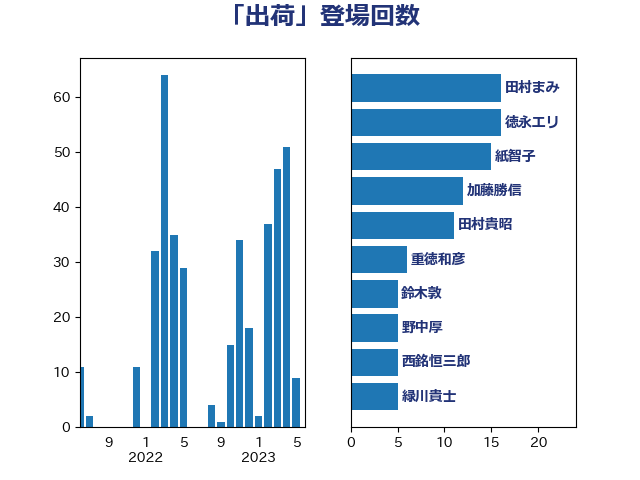

単語「出荷」

| 野上浩太郎 | 自由民主党 | 27 回 |
| 紙智子 | 日本共産党 | 16 回 |
| 田村まみ | 国民民主党 | 14 回 |
| 田村貴昭 | 日本共産党 | 13 回 |
| 緑川貴士 | 立憲民主党 | 11 回 |
| 上田清司 | 国民民主党 | 7 回 |
| 小沢雅仁 | 立憲民主党 | 7 回 |
| 芳賀道也 | 国民民主党 | 7 回 |
| 後藤茂之 | 自由民主党 | 6 回 |
| 重徳和彦 | 立憲民主党 | 6 回 |
| 上杉謙太郎 | 自由民主党 | 5 回 |
| 山田俊男 | 自由民主党 | 5 回 |
| 西銘恒三郎 | 自由民主党 | 5 回 |
| 中村裕之 | 自由民主党 | 4 回 |
| 空本誠喜 | 日本維新の会 | 4 回 |
| 葉梨康弘 | 自由民主党 | 4 回 |
| 宮崎雅夫 | 自由民主党 | 3 回 |
| 寺田静 | 無所属 | 3 回 |
| 岸信夫 | 自由民主党 | 3 回 |
| 松川るい | 自由民主党 | 3 回 |
| 森屋宏 | 自由民主党 | 3 回 |
| 武部新 | 自由民主党 | 3 回 |
| 石川香織 | 立憲民主党 | 3 回 |
| 仁木博文 | 無所属 | 2 回 |
| 吉田統彦 | 立憲民主党 | 2 回 |
| 大西健介 | 立憲民主党 | 2 回 |
| 小野泰輔 | 日本維新の会 | 2 回 |
| 平沢勝栄 | 自由民主党 | 2 回 |
| 平沼正二郎 | 自由民主党 | 2 回 |
| 徳永エリ | 立憲民主党 | 2 回 |
| 斉藤鉄夫 | 公明党 | 2 回 |
| 梅谷守 | 立憲民主党 | 2 回 |
| 梶山弘志 | 自由民主党 | 2 回 |
| 河野義博 | 公明党 | 2 回 |
| 渡辺猛之 | 自由民主党 | 2 回 |
| 熊野正士 | 公明党 | 2 回 |
| 田名部匡代 | 立憲民主党 | 2 回 |
| 田村智子 | 日本共産党 | 2 回 |
| 神谷裕 | 立憲民主党 | 2 回 |
| 稲津久 | 公明党 | 2 回 |
| 菅義偉 | 自由民主党 | 2 回 |
| 藤木眞也 | 自由民主党 | 2 回 |
| 赤羽一嘉 | 公明党 | 2 回 |
| 金城泰邦 | 公明党 | 2 回 |
| 鈴木敦 | 国民民主党 | 2 回 |
| 青山大人 | 立憲民主党 | 2 回 |
| 齋藤健 | 自由民主党 | 2 回 |
| ながえ孝子 | 無所属 | 1 回 |
| 下野六太 | 公明党 | 1 回 |
| 加田裕之 | 自由民主党 | 1 回 |
| 古川俊治 | 自由民主党 | 1 回 |
| 吉川元 | 立憲民主党 | 1 回 |
| 城井崇 | 立憲民主党 | 1 回 |
| 大石あきこ | れいわ新選組 | 1 回 |
| 小野田紀美 | 自由民主党 | 1 回 |
| 山本博司 | 公明党 | 1 回 |
| 岡本あき子 | 立憲民主党 | 1 回 |
| 川田龍平 | 立憲民主党 | 1 回 |
| 打越さく良 | 立憲民主党 | 1 回 |
| 本村伸子 | 日本共産党 | 1 回 |
| 本田顕子 | 自由民主党 | 1 回 |
| 根本幸典 | 自由民主党 | 1 回 |
| 武見敬三 | 自由民主党 | 1 回 |
| 河野太郎 | 自由民主党 | 1 回 |
| 渡辺創 | 立憲民主党 | 1 回 |
| 玉木雄一郎 | 国民民主党 | 1 回 |
| 畦元将吾 | 自由民主党 | 1 回 |
| 石井苗子 | 日本維新の会 | 1 回 |
| 石原正敬 | 自由民主党 | 1 回 |
| 石垣のりこ | 立憲民主党 | 1 回 |
| 石川大我 | 立憲民主党 | 1 回 |
| 福島伸享 | 無所属 | 1 回 |
| 笠井亮 | 日本共産党 | 1 回 |
| 篠原孝 | 立憲民主党 | 1 回 |
| 菅家一郎 | 自由民主党 | 1 回 |
| 藤井比早之 | 自由民主党 | 1 回 |
| 藤川政人 | 自由民主党 | 1 回 |
| 藤田文武 | 日本維新の会 | 1 回 |
| 西村康稔 | 自由民主党 | 1 回 |
| 西田昭二 | 自由民主党 | 1 回 |
| 逢坂誠二 | 立憲民主党 | 1 回 |
| 野間健 | 立憲民主党 | 1 回 |
| 鈴木義弘 | 国民民主党 | 1 回 |
| 須藤元気 | 無所属 | 1 回 |
| 麻生太郎 | 自由民主党 | 1 回 |